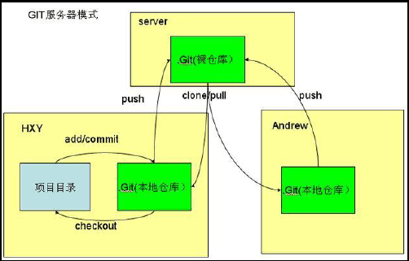
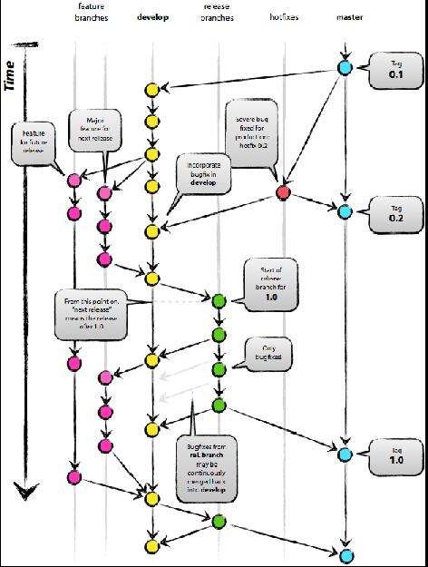
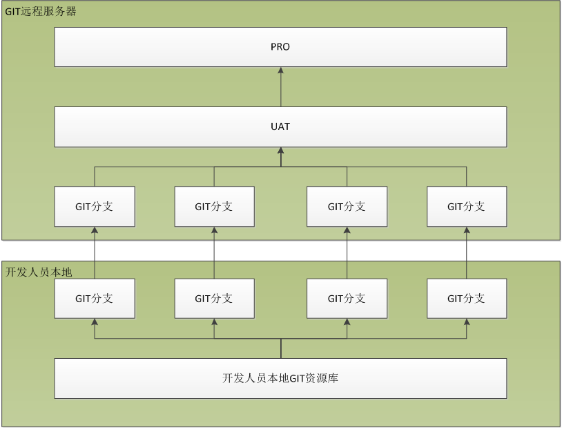
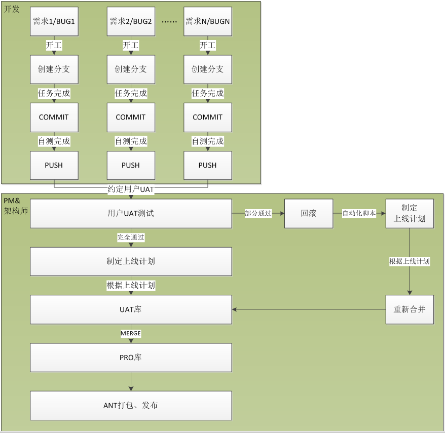

公司GIT版本库管理规范
本文主要用于对公司内部自主研发的系统进行代码的版本管理，同时指导公司内部开发人员使用GIT工具进行统一的管理规范。本文所形成的规范将作为IT部门开发的标准流程进行管控，不定时的进行线上环境的抽查，各项目架构师也应当以此文进行严格的版本管理及执行监督。
适用范围
所有公司内部自主研发的项目。
管理规范
Git使用模式
git在技术层面上，绝对是一个无中心的分布式版本控制系统，但在管理层面上，采用保持一个中心版本库，若干本地库的模式进行源码管理。Git源码库分支管理
源码库存在若干分支，其中主要分支为：master和develop。辅助分支为：hotfixes、release和feature等。整个版本分支图如下。
主要分支：生命周期长，存在于中心库。
master分支：总是发布稳定版本, 这反应了软件的最新/最稳定的状态。当develop分支 的源码到达了一个稳定状态待发布，所有的代码变更需要以某种方式合并到master分支，然后标记一个版本号。
develop分支：该分支HEAD源码始终体现下个发布版的最新软件变更。有人称这个为 “集成分支”，而这是每晚自动构建得来的。用于集成已完成的特性 ；用于集成来自针对master分支的hostfix。
辅助分支：生命周期十分有限，完成使命后即可被清除。一般存在开发者那里。
feature分支：起源于develop分支，最终也会归于develop分支，通常命名为feature-*。
常用于开发一个独立的新功能，且其最终的结局必然只有两个，其一是合并入develop分支，其二是被抛弃。
最典型的Fearture分支一定是存在于团队开发者那里，而不应该是“中心版本库” 中。release分支：起源于develop分支，最终归于develop”或master分支，通常命名为 release-*。
Relase分支通常负责“短期的发布前准备工作”、“小bug的修复工作”、“版本号等元 信息的准备工作”。与此同时，develop分支又可以承接下一个新功能的开发工作了。
Release分支产生新提交的最好时机是develop分支已经基本到达预期的状态，至 少希望新功能已经完全从feature分支合并到develop分支了。
在一段短时间内，在release分支上，我们可以继续修复bug。在此阶段，严禁新 功能的并入，新功能应该是被合并到develop分支的。经过若干bug修复后，release分支上的代码已经达到可发布状态，此时，需要完成三个动作：第一是将release 分支合并到master分支，第二是一定要为master上的这个新提交打TAG（记录里程碑），第三是要将release分支合并回develop分支。
hotfix分支：源于master，归于develop或master，通常命名为hotfix-*。
Hotfix分支类似于release分支，但产生此分支总是非预期的关键BUG。
设立hotfix分支的原因是，希望避免“develop分支”新功能的开发必须为BUG修复 让路的情况。
BUG修复后，需要将hotfix分支合并回master分支，同时也需要合并回develop 分支。
使用规范
由管理员创建中心库，并维护master分支，禁止其它人直接push代码到master分支。
开发人员从中心库相应分支获取代码后，仅允许提交代码到相应分支，然后由管理员进 行中心库各分支间的合并工作。
为避免代码回溯（即代码被覆盖的情况发生）因遵循以下原则:a) 即使在本地库也建立两个库，一个库保持与中心库的同步，一个库进行本地开发。开发完后，现在本地进行合并后再推送中心库。 b) 提交代码时，先比对确定是否自己修改的内容，然后再提交。 c) 尽量进行短小多次的分支开发，便于快速迭代更新。
注释规范如下： a) 必须要有注释，不能留白，或者填写无意义注释。 b) 注释格式为：［修改类型］：［修改说明］。比如 i. 创建：EMS客户端项目建立。 ii. 重构：修订所有方法的注释说明。 c) 修改类型通常为：创建、修改、完善、删除、重构等。
操作流程
功能开发操作流程
克隆中心库的develop分支到本地库。
从本地develop分支创建名为feature-*的功能分支。
在feature-*的分支上进行功能开发，并随时提交内容到feature-*分支上。
功能全部开发完毕后，提交内容到中心库develop分支，详细过程如下：
本地develop分支拉取中心库develop分支的内容，进行同步。
合并本地feature-*分支内容到本地develop分支。（注：如果本地分支的提交注释有特别意义，在merge时，选择“no ff”选项；否则：在merge时，选择“squash（聚合）”选项。聚合后需要手工填写注释并提交代码到本地develop分支。）
解决合并过程中的冲突，并提交代码到本地develop分支。
从本地develop分支推送内容到中心库develop分支。
若干时间后，删除本地feature-*分支
版本发布操作流程
1、 release库仅包含master分支即可。
release库中每个目录为一次发布过程，目录名称规范为：VxxB2013xxxx-简要说明；同时需要为对应的源码打上TAG。TAG名称为VxxB2013xxxx。
release库中每次发布目录应包含dist(发布物-安装介质、数据库文件、配置文件等)、doc(文档说明-安装说明、使用说明、管理手册等)、exts(产品外所需的文件-涉及的软件包、工具包等)
GIT版本库管理规范
- 开发工程师在申请GIT权限时，提交的授权口令文件中均需要以公司域账号作为账号名，不允许出现英文名、全名的简称等作为用户名。
- 开发工程师均需要以GIT分支的方式提交代码，每个功能点或需求、BUG等均需要建分支，不允许多个功能或BUG合并后进行代码的提交，GIT分支的创建命名规则为：【类型】【禅道需求或BUG编号】-【任务开始日期（YYYYMMDD）】进行提交，例：REQ 001-20160101。
- 后期管理规范中，所有的代码提交版本均需要与禅道的任务编号进行一对应，开发工程师在创建GIT分支的流程中必须做到描述的清晰。以下几项禅道与GIT的命名类型可作为参考：
禅道
GIT命名
BUG
BUG
需求
REQ
自动化测试脚本
JUNIT
- 开发工程师需要自觉养成代码同步的习惯，代码提交前尽量做到先同步UAT资源库，拿到最新的线上版本的开发代码，同时避免在提交过程中出现代码冲突。未及时同步导致代码冲突的发生，均自行解决相应的冲突及问题。
- 系统架构师可以根据自身的项目情况指定专人进行以下相应的流程及规范。（以下文中“架构师”表示架构师或其指定的某一个责任人）
- 如上所述，系统架构师后续在项目需求的功能拆解、BUG定义等流程上需要对应的提高，将禅道的任务在拆解过程中，做到更加的可追溯性及原子性。
- 各项目的系统架构师必须对开发工程师进行不定期的管控及监督，未完整清晰描述分支版本的代码不应合并至UAT分支进行发布，违规者需要承担相应的责任。
- 后续所有的功能发布均由项目所负责的系统架构师在上线前统一合并到UAT版本，所有开发人员不允许对UAT版本的代码进行PUSH操作。一旦在不定期巡检中发现有不合规的操作，均需要承担相应的责任。
- 系统架构师的代码合并依据需以每周上线计划进行代码合并，避免功能的误更新导致发布到线上时出现各种异常或问题。
- 系统架构师在代码合并的过程中遇到冲突，需要找到GIT分支创建人协作进行代码的MERGE操作，分支的创建人必须义务的协助处理相应的问题及代码版本冲突。
- 当用户在UAT环境测试验收完成后，系统架构师必须根据业务部门的反馈进行代码的重新整合，验收不上线的功能必须进行回滚操作。系统架构师在上线发布前必须保证UAT环境的代码的完整性，UAT环境的打包必须做到正确无误的发布。
- 系统例行更新发布前一天必须由系统架构师将UAT分支合并至PRO分支，等待ANT脚本的执行进行项目例行更新及上线。
GIT版本结构图
5 GIT代码管理执行流程图

名词解释
- Term heading
- Description heading
- UAT环境
- 用于用户做验收时进行测试的环境，其中数据均为线上生产数据的备份，在未约定与用户进行验收测试的情况下，不对业务部门开放。
- 测试环境
- 包含所有开发代码的环境，用于提供用户进行培训、演示等用途的临时环境，数据为加密及改版过的测试数据。
- PRO分支
- 用于执行ANT脚本进行自动发布的GIT环境，此处的代码必须与生产环境完全保持一致。
- UAT分支
- 用于保证系统的完整性，与PRO分支除数据库配置文件不同外，必须完全一致。
- GIT分支
- 由开发工程师根据需求所建的分支，由开发工程师从本地GIT资源库推送至公司统一的GIT版本资源库。
- 测试分支
- 由项目组自行定义的分支，用于管理测试环境的代码版本库，可根据业务部门的用户需求自行合并GIT分支进行打包整合，以提供给BU部门稳定的可用的测试环境。